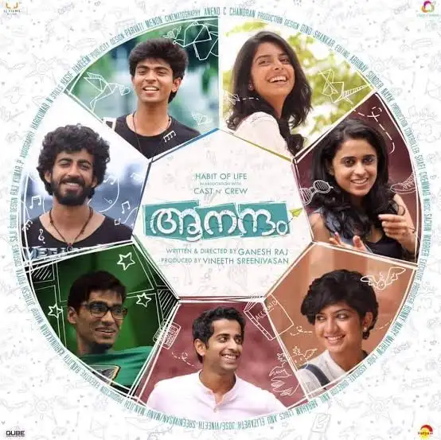

After crossing paths with a ghost, a Hindu priest embarks on an enlightening journey that causes him to question his faith, his identity and everything he believed to be true.
A boy raised by boars, who wears a boar's head, boards the Infinity Train on a new mission with the Flame Pillar along with another boy who reveals his true power when he sleeps. Their mission is to defeat a demon who has been tormenting people and killing the demon slayers who oppose it.

Seven friends visit Goa and Hampi while on their college trip. Their experiences during their journey help them understand the intricacies of love and friendship.